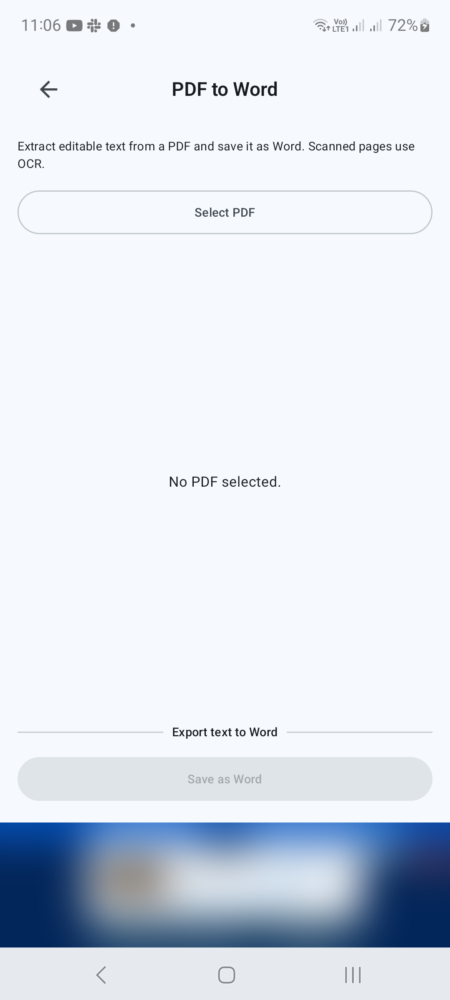
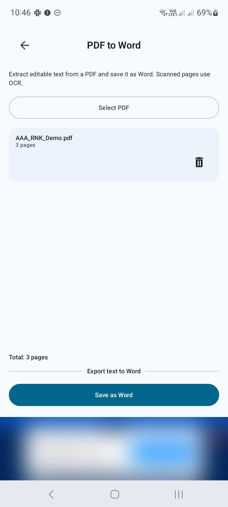
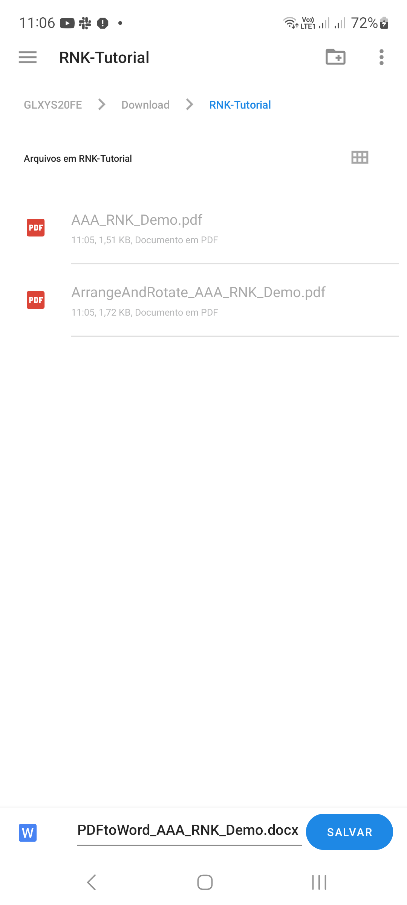
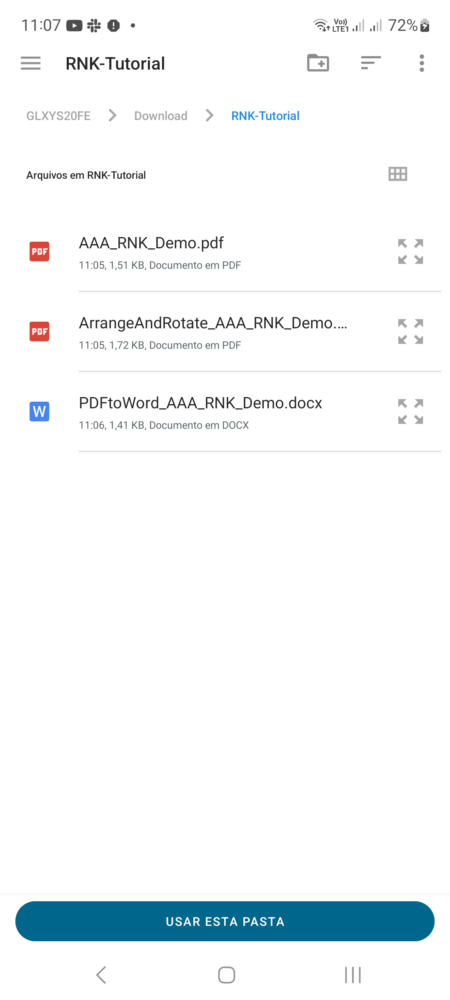
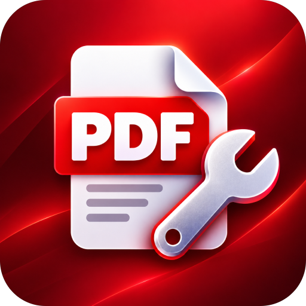

PDF 转换器/Android 教程
如何在 Android 上将 PDF 转换为 Word
使用 PDF to Word 将 PDF 中的文本提取到 Word 文档中。扫描的页面使用 OCR 来识别文本。
屏幕截图显示了英文应用程序界面。翻译后的按钮名称可能与图像中的标签不同。
步骤 01 / 04
打开 PDF 到 Word
在工具中，点击PDF 到 Word。点按选择 PDF，然后选择要转换的文档。

步骤 02 / 04
检查所选文件
确认屏幕上显示的文件名和页数。如果您选择了错误的文件，请将其从选择中删除并选择正确的 PDF。屏幕将此操作标记为将文本导出到 Word。

步骤 03 / 04
导出文本
点击另存为Word。出现提示时选择输出名称和位置，然后让应用程序完成转换。对于扫描页面，OCR 尝试识别页面图像中的文本。

步骤 04 / 04
查找并查看 Word 文档
在目标文件夹中找到保存的 DOCX，如 Android 文件夹列表所示。在兼容的 Word 编辑器中打开它。校对姓名、数字、标点符号和换行符，尤其是扫描页面上的名称、数字、标点符号和换行符。在共享可编辑文件之前，根据需要重新格式化表格或标题。

获得更好结果的提示
- 从清晰、直立的扫描开始，以获得更好的 OCR 结果。
- 在依赖之前，请先对照原始 PDF 检查提取的文本。

开始使用 Android
PDF Converter, Scanner & Tools
将 JPG 转换为 PDF、PDF 转换为 Word、扫描、阅读、合并、压缩等。
在 Google Play 上获取它